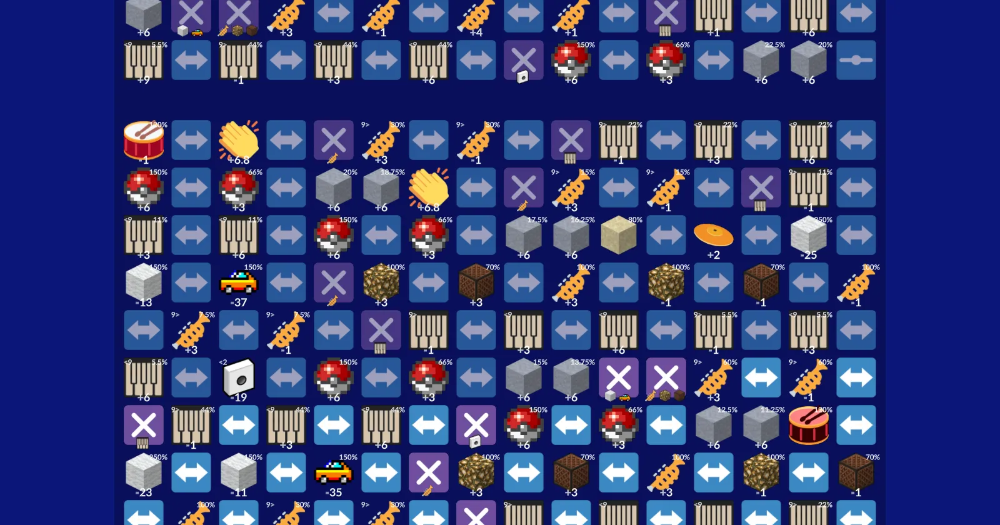

Visualizer
Play a cover back with no dropped notes.
- Plays on several CPU threads, so dense covers and particle accelerators stay smooth.
- Seek, restart and pause from the playback bar at the bottom of the window.
- Open any
.tdwor.🗿file, or start one from the command line with-i cover.tdw.
